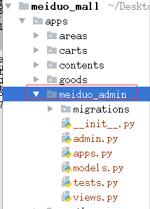

美多管理后台
Django框架已经提供了一个Admin管理后台，但是Admin的本身的页面可修改的页面布局效果比较少，无法满足公司定制页面需求，这时候就需要独立开发一套后台管理系统，满足公司对后台数据的管理。
项目架构
开发模式：前后端分离
前端框架：VUE
后端框架：Django REST framework
功能部分：管理员登录，数据统计，用户管理，商品管理，订单管理，权限管理
主要技术 ： JWT用户认证 ，CORS跨域
项目搭建
美多后台的编写是基于原有的美多商城项目，在原有项目基础上创建一个meiduo_admin的子应用，在子应用中完成后台的所有功能

添加工程的url和子应用的url
工程url
from django.urls import path, include
urlpatterns = [
path('meiduo_admin/', include('apps.meiduo_admin.urls')),
]
子应用url
from django.urls import path
urlpatterns = [
]